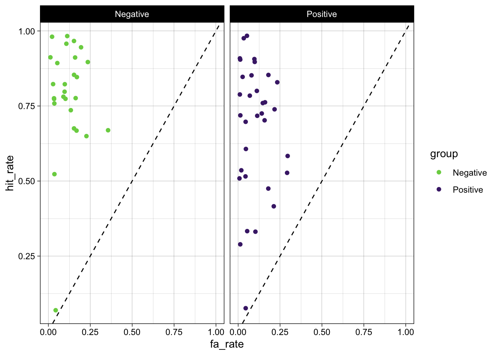
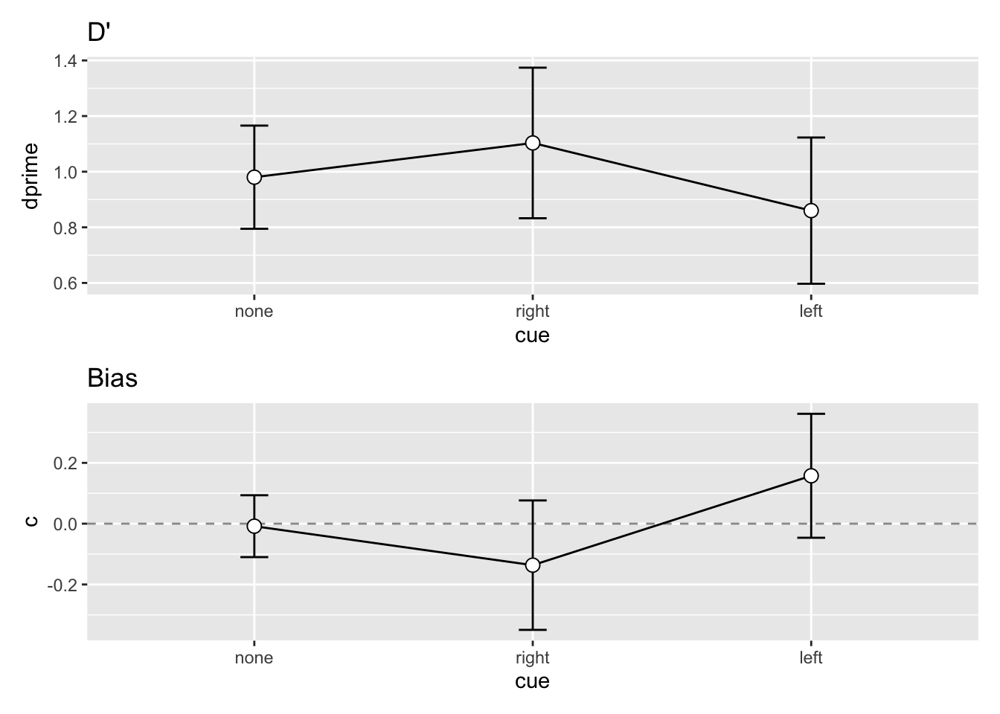
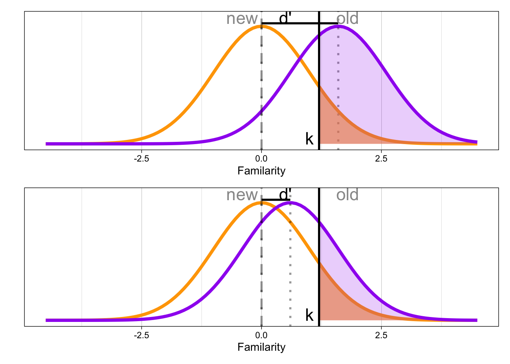

Übung 4
Untersuchung eines präsymptomatischen Indikators für die Alzheimer-Krankheit
![]()
Die Übung 4 besteht aus den zwei folgenden Aufgaben:
1. Rmarkdown-File ausführen: In diesem File werden die Daten eingelesen, SDT Kennzahlen berechnet und Grafiken erstellt. Beantworten Sie die Fragen direkt im Rmarkdown-File. Das Rmarkdown-File muss von einer anderen Person ausgeführt werden können (Reproduzierbarkeit). Zeit: 1 Woche.
2. Peer Feedback: Mittels Ilias wird Ihnen das Rmarkdown-File einer anderen Person zugeordnet. Ihr Auftrag ist es, dieses Rmarkdown-File auszuführen und Feedback zu geben. Zeit: 1 Woche.
Einleitung
In Übung arbeiten wir mit einem klinischen Datensatz. Das Ziel ist es, Sensitivität und Bias für zwei Gruppen von insgesamt 60 Patienten zu untersuchen, die sich in ihrem Risiko für Alzheimer-Krankheit unterscheiden.
Die Anwesenheit von Beta-Amyloid wurde durch einen Bluttest untersucht. Ein positiver Beta-Amyloid Test gilt als präsymptomatischer Indikator für die Alzheimer-Krankheit.
Aufgrund dieses Bluttests wurden die Patienten in zwei Gruppen eingeteilt. Es soll nun untersucht werden, ob sich die beiden in ihrer Gedächtnisleistung unterscheiden.
Dazu wurde der “Rey auditory verbal learning test” (RALVT: Bean, 2011) durchgeführt.
In diesem Test müssen Patienten zuerst eine Liste bestehend aus 15 Wörtern lernen. Sie werden danach mit 30 Wörtern getestet (15 alte, 15 neue Wörter) und müssen angeben, ob ein Wort auf der Liste war oder nicht (alt/neu).
Die Antworten der Patienten wurden bereits als als korrekte oder inkorrekte ‘Ja’-Antworten klassifiziert (hits und false alarms).
Packages laden
Daten laden
d <- read_csv("data/amyloidSDT.csv")Rows: 60 Columns: 6
── Column specification ────────────────────────────────────────────────────────
Delimiter: ","
chr (1): group
dbl (5): ID, hit, miss, fa, cr
ℹ Use `spec()` to retrieve the full column specification for this data.
ℹ Specify the column types or set `show_col_types = FALSE` to quiet this message.Immer zuerst Daten anschauen.
d# A tibble: 60 × 6
ID group hit miss fa cr
<dbl> <chr> <dbl> <dbl> <dbl> <dbl>
1 1 Negative 13 2 0 15
2 2 Negative 12 3 1 14
3 3 Negative 14 1 0 15
4 4 Negative 12 3 1 14
5 5 Negative 11 4 2 13
6 6 Negative 12 3 1 14
7 7 Negative 10 5 2 13
8 8 Negative 13 2 1 14
9 9 Negative 12 3 0 15
10 10 Negative 12 3 2 13
# ℹ 50 more rowsIm Datensatz halben wir folgende Variablen:
-
ID: Patientien-ID -
group: Indikator für Beta-Amyloid Bluttest (Negative oder Positive) -
hit: Anzahl hits -
miss: Anzahl misses -
fa: Anzahl false alarms -
cr: Anzahl correct rejections
Im Datensatz gibt es es einige Nullen – z.B. hat die Person mit der ID 1 keine False Alarms. Dies ist problematisch, weil wir die relative Häufigkeiten von Hits (hit_rate) und False Alarms (fa_rate) berechnen und anschliessen diese z-transformieren wollen. Die fa_rate ist der Anteil ‘Ja’-Antworten wenn das Wort tatsächlich aber nicht auf der Liste war, also fa / (fa + cr). Bei der ersten Person wäre dies 0/(0 + 15) = 0.
Das Problem ist nun, dass die relative Häufigkeit hier als \(0\) geschätzt wird - eine Wahrscheinlichkeit darf aber eigentlich nicht \(0\) sein, sondern liegt zwischen \(-\infty\) und \(\infty\). Wenn wir qnorm() (die Quantilfunktion der Normalverteilung) auf den Wert \(0\) anwenden, erhalten wir:
qnorm(0)[1] -InfDamit können wir nicht weiterrechnen. Wir wenden daher einen Trick an: wir addieren einfach zu jeder Zelle im Datensatz den Wert \(0.5\). Somit erhalten wir für die fa_rate der ersten Person:
0 + 0.5 / (0 + 0.5 + 15 + 0.5)[1] 0.03125Dies bedeudet, dass wir einen kleine Wahrscheinlochkeit erhalten; diese ist aber nicht Null. Diesen Wert können wir nun in qnorm() einsetzen.
qnorm(0.03125)[1] -1.862732Den Wert 0 ersetzen
add_half_count <- function(count) {
count + 0.5
}Hit und False Alarm Rate berechnen
d <- d |>
mutate(
hit_rate = hit / (hit + miss),
fa_rate = fa / (fa + cr)
)Hit Rate vs False Alarm Rate
Bevor wir die SDT Kennzahlen berechnen, stellen wir die hit rate und false alarm rate grafisch dar:
d |>
ggplot(aes(fa_rate, hit_rate, color = group)) +
geom_abline(intercept = 0, slope = 1, linetype = 2) +
geom_jitter() +
scale_color_viridis_d(direction = -1, begin = 0.1, end = 0.8) +
facet_wrap(~ group) +
xlim(c(0, 1)) +
theme_linedraw()
d’ und bias berechnen
d <- d |>
mutate(
dprime = zhr - zfa,
k = -zfa,
c = -0.5 * (zhr + zfa)
)Wir runden nun dprime, k und c auf zwei Nachkommastellen.
d# A tibble: 60 × 13
ID group hit miss fa cr hit_rate fa_rate zhr zfa dprime k
<dbl> <chr> <dbl> <dbl> <dbl> <dbl> <dbl> <dbl> <dbl> <dbl> <dbl> <dbl>
1 1 Nega… 13.5 2.5 0.5 15.5 0.844 0.0312 1.01 -1.86 2.87 1.86
2 2 Nega… 12.5 3.5 1.5 14.5 0.781 0.0938 0.776 -1.32 2.09 1.32
3 3 Nega… 14.5 1.5 0.5 15.5 0.906 0.0312 1.32 -1.86 3.18 1.86
4 4 Nega… 12.5 3.5 1.5 14.5 0.781 0.0938 0.776 -1.32 2.09 1.32
5 5 Nega… 11.5 4.5 2.5 13.5 0.719 0.156 0.579 -1.01 1.59 1.01
6 6 Nega… 12.5 3.5 1.5 14.5 0.781 0.0938 0.776 -1.32 2.09 1.32
7 7 Nega… 10.5 5.5 2.5 13.5 0.656 0.156 0.402 -1.01 1.41 1.01
8 8 Nega… 13.5 2.5 1.5 14.5 0.844 0.0938 1.01 -1.32 2.33 1.32
9 9 Nega… 12.5 3.5 0.5 15.5 0.781 0.0312 0.776 -1.86 2.64 1.86
10 10 Nega… 12.5 3.5 2.5 13.5 0.781 0.156 0.776 -1.01 1.79 1.01
# ℹ 50 more rows
# ℹ 1 more variable: c <dbl>Aggregierte Kennzahlen
Grafische Darstellung von d' und bias
p_dprimes <- dprimes |>
ggplot(aes(x=group, y=mean, group=1)) +
geom_jitter(aes(group, dprime), alpha = 0.1, data = d, width = 0.05) +
geom_line() +
geom_errorbar(width=.1, aes(ymin=mean-se, ymax=mean+se), colour="black") +
geom_point(shape=21, size=3, fill="white") +
ylab("Sensitivity")p_cs <- cs |>
ggplot(aes(x=group, y=mean, group=1)) +
geom_jitter(aes(group, c), alpha = 0.1, data = d, width = 0.05) +
geom_line() +
geom_errorbar(width=.1, aes(ymin=mean-se, ymax=mean+se), colour="black") +
geom_point(shape=21, size=3, fill="white") +
ylab("Bias")p_dprimes + p_cs
Fragen
Bitte versuchen Sie, folgende Fragen so gut wie möglich zu beantworten. Schreiben Sie Ihre Antworten direkt unter die Fragen.
Frage 1
Wie unterscheiden sich die Gruppen in der
hit rateundfalse alarm rate(siehe erste Grafik)?
Antwort:
Frage 2
Wie unterscheidet sich die Sensitivität zwischen den Gruppen im RALVT? Was könnte das bedeuten? Denken Sie, dass der Unterschied von relevanter Grösse ist?
Antwort:
Frage 3
Wie unterscheidet sich die Antworttendenz zwischen den Gruppen im RALVT? Was könnte das bedeuten? Denken Sie, dass der Unterschied von relevanter Grösse ist?
Antwort:
Frage 4
Wie denken Sie hängen Sensitivität und Antworttendenz in diesem Experiment zusammen? Was könnten die Gründe sein? Was passiert, wenn d’ kleiner wird, das Kriterium k aber konstant bleibt? Eventuell hilft diese Grafik, um darüber nachzudenken.

Reuse
Citation
@online{ellis2022,
author = {Ellis, Andrew},
title = {Übung 4},
date = {2022-05-05},
url = {https://kogpsy.github.io/neuroscicomplabFS23//pages/chapters/uebung-4-signal-detection.html},
langid = {en}
}